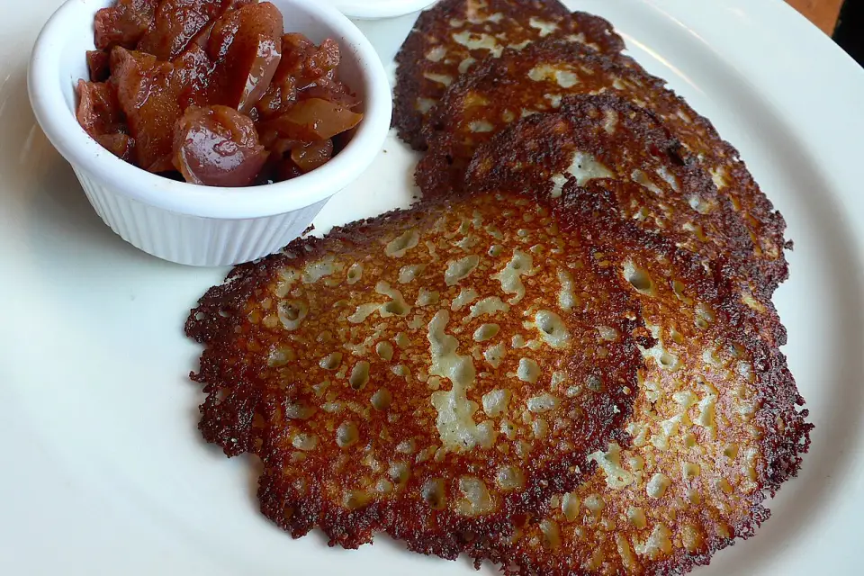

La cuina de l’oli
Per recordar el miracle de l’oli, per Hanukkà és tradició menjar plats fregits com els latkes (coquetes cruixents de patata) i les sufganiot (berlines esponjoses farcides de melmelada o crema).

Ingredients
Preparació
- Activar la massa. Posa la farina en un bol gran, fes-hi un forat al mig i afegeix-hi el llevat esmicolat, la llet tèbia i una culleradeta de sucre. Barreja-ho suaument.
- Pastar. Incorpora-hi la resta del sucre, la sal, els ous i la mantega en pomada. Pasta fins a obtenir una massa llisa, elàstica i homogènia.
- Primera fermentació. Fes-ne una bola, posa-la al bol, cobreix-la amb un drap humit i deixa-la reposar 1 hora en un lloc temperat fins que dobli el volum.
- Donar forma. Sobre una superfície enfarinada, estira la massa amb un corró fins que tingui uns 8-10 mm de gruix. Talla cercles amb un tallapastes o un got d’uns 5-6 cm de diàmetre. Si vols fer rosquilles amb forat, talla un cercle petit d’1 cm al centre de cada peça.
- Segona fermentació. Col·loca les peces sobre paper de forn enfarinat, tapa-les i deixa-les reposar en un lloc càlid durant d’1,5 a 2 hores.
- Fregir. Escalfa abundant oli en una paella fonda o un cassó (uns 3-4 cm de fondària) a temperatura mitjana-alta, sense que arribi a fumejar. Fregeix les sufganiot en tandes petites fins que siguin daurades per totes dues bandes (uns 1-2 minuts per banda).
- Acabat. Retira-les sobre paper absorbent per eliminar l’excés d’oli. Farceix-les de melmelada amb una mànega pastissera (si les has fet senceres) i empolsina-les generosament amb sucre de llustre o sucre blanc.

Ingredients
Preparació
- Ratllar. Pela les patates i ratlla-les amb la ceba, amb un ratllador gruixut o un robot de cuina.
- Escórrer bé. Posa la barreja en un drap net i retorça’l per treure tot el líquid possible. És el secret perquè quedin cruixents.
- Barrejar. En un bol, ajunta la patata i la ceba amb els ous, la farina, la sal i el pebre.
- Fregir. Escalfa 1 cm d’oli en una paella. Tira-hi cullerades de massa, aixafa-les una mica i fregeix-les 3-4 minuts per banda fins que siguin ben daurades.
- Servir. Escorre-les sobre paper absorbent i serveix-les calentes amb compota de poma o crema agra.